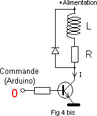

Electronique
-
Pont en H
-
Pont de diodes
(AC toujours positif ou négatif)
-
Diode de roue libre
 -
Tube à vide
Balance des éléctrons linéairement depuis une plaque par effet thermoionique
1. Filament chauffé par une source électrique auxiliaire.
2. Cathode : chargée négativement.
3. Flux d'électrons se déplaçant de la cathode vers l'anode.
4. Anode : chargée positivement.
5. Courant électrique mesuré dans le circuit.
6. Source de tension permettant de charger positivement l'anode.
-
Circuit RLC
Equation des télégraphistes
On a alors :
et
On en tire :
et

Et donc :
et